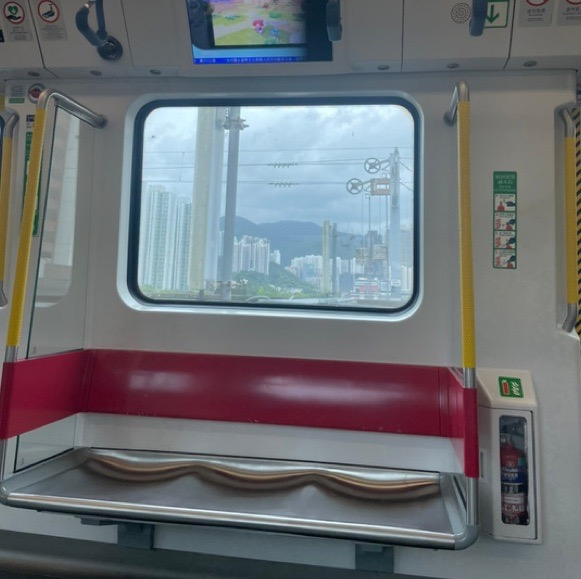
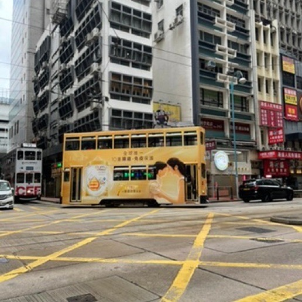
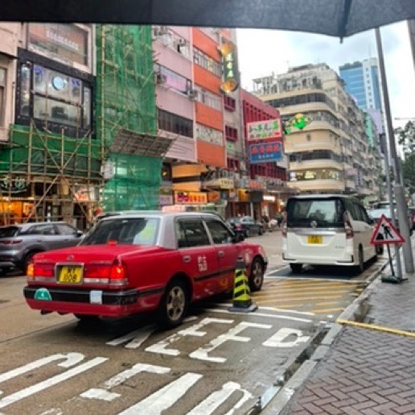

Getting Around Hong Kong: A Student Guide to Public Transport
Transportation in Hong Kong is well developed, and every part of the city is accessible with some form of transport. This guide brings together everything you need as an exchange student: the MTR, the ding ding trams, buses and minibuses, and taxis. Most of them are paid with an Octopus card, so read our Octopus guide first.
Which transport for which trip
| Transport | Best for | Pay with |
|---|---|---|
| MTR | Fast trips across the city | Octopus |
| Tram (ding ding) | Cheap, scenic rides on Hong Kong Island | Octopus, flat fare (HK$3.30) |
| Bus | Beaches, trails and residential districts | Octopus |
| Minibus | Places buses and rails don't reach | Octopus on many, cash on some |
| Taxi | Heavy luggage and late nights | Cash or the Uber app |
On this page: MTR · Ding dings (trams) · Buses and minibuses · Taxis · Star Ferry
Hong Kong MTR (Mass Transit Railway): your best friend
The Hong Kong metro system, run by the MTR Corporation, is efficient, clean and super convenient. It avoids traffic entirely, and even rush hour is acceptable.
How to ride the Hong Kong MTR like a local
- Follow the signs and staff. Pay attention to the platform signs, because the staff help run the system smoothly.
- Choose your car. Digital boards on the platform show how crowded each car is. They also point out the ideal interchange stations, so you can walk to the other side of the platform to change lines without crossing the whole station.
- Travel late. Trains run frequently from early morning until past midnight, and they connect New Territories campuses straight to the nightlife districts on Hong Kong Island in under an hour.
- Use the right exit. Big stations have many exits, so check the best one for your destination in the MTR app before you leave the platform.
- Follow the rules. Don't eat or drink in the paid area, and stand to one side on escalators so others can pass.
Pay with your Octopus card. For the route from Kowloon Tong station to your classroom, see From Kowloon Tong MTR to CityU.


Ding dings: how to ride the historic Hong Kong trams
Trams operate strictly on Hong Kong Island. These historic double-decker trams, run by Hong Kong Tramways, are slow compared to the MTR, but they cost next to nothing and offer an incredible, scenic view of the city streets.
How to ride the Hong Kong tram, and what it costs
- Hop on at the back.
- Go up the stairs to the upper deck and take a front-row seat for the best views.
- Pay a flat, budget-friendly fare (HK$3.30) with your Octopus card when you step off at the front exit, next to the driver.
Use the tram when you want sightseeing, and the MTR when you want speed.

Buses and minibuses in Hong Kong
Extensive franchised bus routes cover remote beaches, mountain trails and residential districts that rails don't reach.
Hong Kong double-decker buses: paying with Octopus
- Octopus. Regular double-decker buses accept Octopus cards.
- Route displays. Buses feature digital route displays, so you can follow where you are.
- Good for. Beach days, hikes and anywhere the MTR doesn't go.
How to take a minibus in Hong Kong (and how to get off)
Green and red minibuses require a bit more local confidence. You often have to shout out your desired stop, in Cantonese or English, before you press the buzzer. It's an authentic rite of passage for new arrivals.
The phrase to learn is “Yau lok, m goi!” It means “I'm getting off, please!” With this, you're all set to enjoy the hectic drive.
- Bring cash. Some minibuses don't take Octopus.
- Hold on. Minibuses move fast, so sit down if you can and hold on.
Night buses in Hong Kong after the MTR closes
When the MTR stops running for the night, a few overnight bus routes keep going, so you can still get home cheaply after a night out. Night routes come less often than daytime buses, so look up the next departure before you leave, and keep taxi money as a back-up.
Hong Kong taxis: the real lifesavers
Taxis are readily available and affordable compared to Western standards. They're a lifesaver when you're carrying heavy luggage or heading home late after a night out.
Red, green and blue taxis in Hong Kong: what the colours mean
- Red taxis operate in urban areas.
- Green taxis operate in the New Territories.
- Blue taxis operate on Lantau Island.
Split the fare. Sharing with friends makes a late-night ride much cheaper per person.
Pay with cash or through the Uber app.


The Star Ferry and getting to the airport
- Star Ferry. The ferry between Tsim Sha Tsui and Hong Kong Island is cheap, takes Octopus, and gives you one of the best harbour views in the city.
- Arriving at the airport. Plan your first journey in advance, and decide whether the MTR, a bus or a taxi suits your luggage best.
FAQ
- How much does the Hong Kong tram cost?
- The ding ding has a flat fare of HK$3.30, paid with your Octopus card when you step off at the front.
- How do I get off a minibus in Hong Kong?
- Call out “Yau lok, m goi!” or press the buzzer before your stop.
- What do the taxi colours mean in Hong Kong?
- Red taxis operate in urban areas, green taxis in the New Territories and blue taxis on Lantau Island.